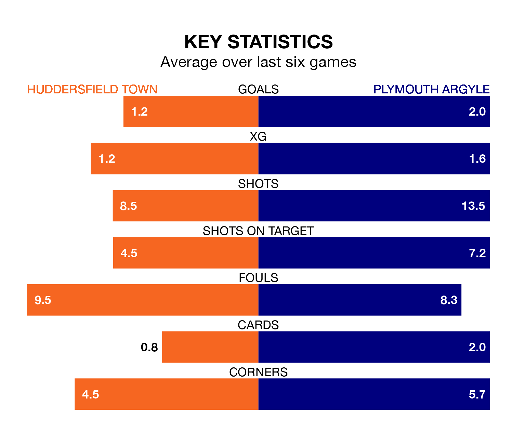

Huddersfield Town are on a poor run ahead of hosting Plymouth Argyle at the John Smith's Stadium on Saturday, with just four points collected from their last six games.
The Terriers have picked up one win and one draw in their last six Championship games, and face a Pilgrims side whose last six games have brought one win and four draws.
With 26 goals in 26 games so far this season, Huddersfield are scoring at below the league average rate with 1.0 goals per game. And they are conceding more than average, letting in 44 goals at a rate of 1.7 per game.
Plymouth, meanwhile, are above average scorers, with 1.7 goals per game, compared to a league average of 1.4. They have also conceded 1.7 goals per game.
In Morgan Whittaker, Argyle have one of the league's sharpest shooters so far this season. He has notched 13 goals in 26 appearances, to sit second in the scoring charts.
His goal rate of one every 170 minutes is quicker than that of Michal Helik, Town's top scorer with a goal every 334 minutes, and a total of seven goals in 26 games.
The Terriers are 21st in the table after 26 games, of which they have won five and drawn 10, earning 25 points.
The Pilgrims are three places ahead of the home team in 18th, with seven wins and eight draws putting them on 29 points.
Huddersfield's last match was on January 1, a 4-1 loss against Leicester City, with Helik getting the goal for the Terriers.
Plymouth drew 3-3 with Watford last time out, also on January 1, with Finn Azaz, Ryan Hardie and Whittaker on the scoresheet.
Updated: 12:57, 02/01/24